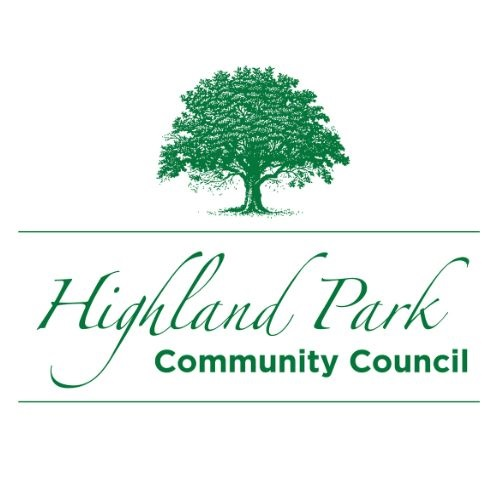

Welcome, neighbor!
160+ households are selling across the neighborhood today. This map is your guide to all of them.
- 📍Tap any pin to see what that house is selling.
- 🔍Search for items — try “bikes” or “records” — and matching stops light up on the map.
- ⭐Star the stops you want to hit — they turn gold on the map, and the My List tab makes them a numbered route you can reorder and check off as you go.
- 🧭Tap “Find Me” up top to see where you are relative to the sales as you walk.
- 🎪Take a break at the Bryant Street Festival — live music, food trucks, 40+ vendors. See the lineup →
Everything saves on your phone automatically — no account, no sign-in. Reopen this guide anytime with the ? button at the top.
Download the printable map (PDF)